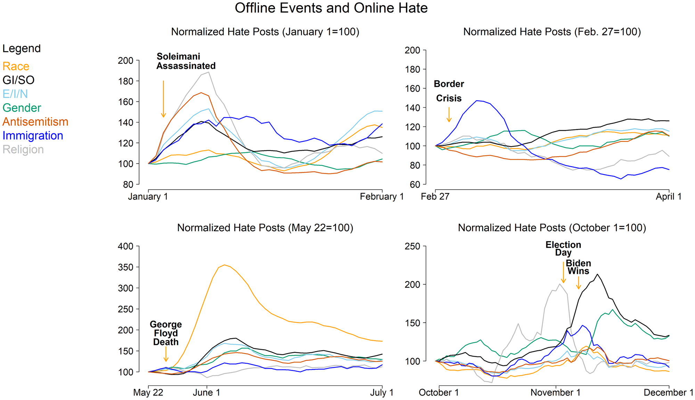
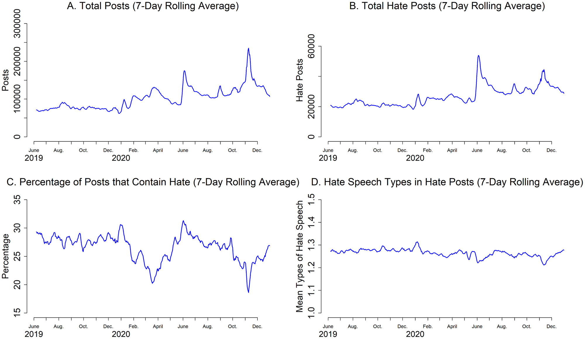
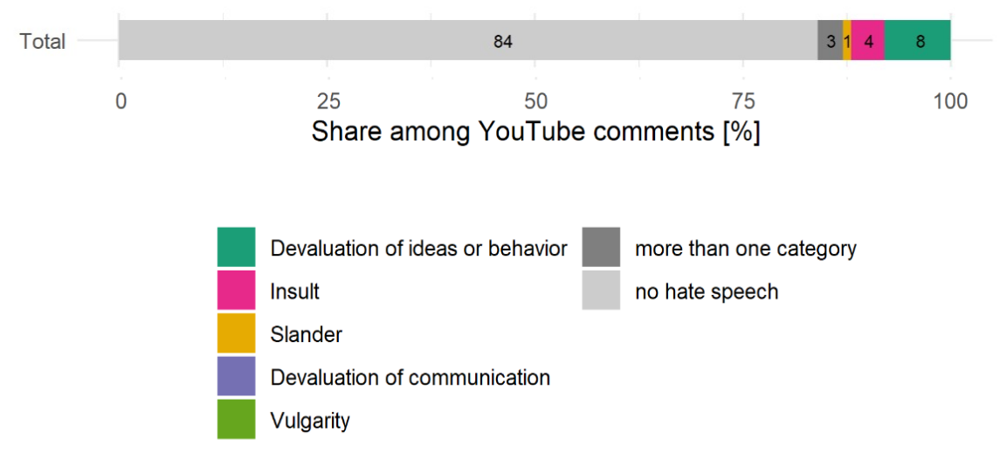
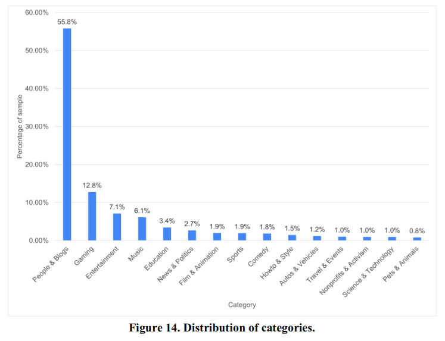

Die Rolle von sozialen Medien in öffentlichen Debatten: Wut & Hassrede
Recherche Notizen für die ORF Dokumentation Dok 1: Jeder gegen Jeden, Österreich rastet aus
Haben Wut und Agression in den sozialen Medien einen Effekt auf Diskussionen und Verhalten in der Offline Welt?
- Was machen Soziale Medien mit unserer Debattenkultur?
- Woher kommt die Wut der Menschen - wird diese möglicherweise online geschürt?
- Gab es die Wut immer schon und hat sie online nur ein Sprachrohr gefunden?
In der ORF Dokumentation Jeder gegen Jeden? Österreich rastet aus, die auch online verfügbar ist, spreche ich über diese Fragen. Zur Vorbereitung habe ich mich intensive mit der Datenlage zu diesem Thema beschäftigt, die Übersicht meiner Ergebnisse findet ihr hier.
Zusammenfassung
Soziale Medien haben unsere Debattenkultur fundamental verändert, indem sie eine Kommunikationsumgebung schaffen, die extreme Meinungen und intensive Emotionen besonders sichtbar macht. Die Plattformen bieten Menschen, die Anerkennung und Status durch aggressive Kommunikation suchen, eine ideale Bühne, da aggressives Verhalten online weniger Konsequenzen nach sich zieht als in persönlichen Begegnungen. Dieser digitale Raum verzerrt die Wahrnehmung der Realität, indem aggressive und polarisierende Individuen besonders viel Aufmerksamkeit bekommen - von den Medien, und anderen Social Media Usern. Die Folge ist eine zunehmende emotionale Spaltung, bei der sich verschiedene gesellschaftliche Gruppen immer mehr ablehen gegenseitig. Diese emotionale Spaltung entspricht nicht unbedingt einer tatsächlichen Meinungsverschiedenheit. Die inhaltliche Polarisierung zu Themen wie Homosexualität, Klimawandel, Abtreibung usw. ist oft viel geringer, als uns die gefühlte Spaltung glauben lässt. Social Media verstärken vor allem diese emotionale und soziale Dynamik.
Die Wut der Menschen hat ihre Wurzeln in realen gesellschaftlichen Konflikten, wird aber durch soziale Medien verstärkt und sichtbarer gemacht. Diese digitale Sichtbarkeit erweckt den Eindruck, dass die gesamte Gesellschaft von Frustration und Zorn durchdrungen ist, obwohl dies nicht der Realität entspricht. Besonders betroffen sind Gruppen, die einen Statusverlust in der aktuellen Gesellschaft wahrnehmen - allen voran junge Männer, die sich durch gesellschaftliche Veränderungen marginalisiert fühlen. Konkrete Ängste, wie der mögliche Verlust von Privilegien, beispielsweise durch Klimaschutzmaßnahmen, die traditionelle Statussymbole wie das Auto in Frage stellen, befeuern diese Wut. Rechte politische Parteien nutzen gezielt diese Frustration und Verunsicherung, um Zuspruch zu generieren und gesellschaftliche Spannungen weiter zu verstärken.
Gesellschaftliche Konflikte sind keine Erfindung des digitalen Zeitalters, die gab es immer schon. Social Media habend diese Debatten jedoch viel sichtbarer gemacht. Die dort herrschende Aufmerksamkeitsökonomie rückt Wut und Konflikte übermäßig in den Mittelpunkt. Extreme und hasserfüllte Stimmen bekommen zu viel Aufmerksamkeit. Die nuancierte, vermittelnde Perspektive wird dabei meist unsichtbar: Menschen, die zufrieden sind und verschiedene Standpunkte verstehen können, bleiben in der Online-Kommunikation häufig stumm - die sogenannte “leise Mehrheit” zieht sich zurück. Gleichzeitig finden aggressive, nach Anerkennung und Status strebende Individuen (und populistische Parteien, die diese Problemlage ausnutzen), in sozialen Medien neue Möglichkeiten, ihre Narrative und Frustrationen zu inszenieren und zu verbreiten.
Wissenschaftliche Datenlage zu den möglichen Effekte von sozialen Medien und Internet
- Rolle von Social Media ist komplex
- Wissenschaftliche Ergebnisse sind gemischt: positive und negative
- Neue Medien waren immer schon im Verdacht (auch schon Bücher, Radio, Fernsehen…)
- Medien können für gute und schlechte Zwecke verwendet werden
- Social Medien sind noch etwas komplizierter, weil User Information teilen, nicht Medien selbst
- Macht der Platformen liegt im Steuern des Informationsflusses
Positive Effekte:
- politisches Wissen
- politische Teilhabe
- Lesen verschiedener Nachrichtenquellen, mehr Bandbreite
- Politisches Meinunsäußerungen: leichter auf social media
Negative Effekte:
- politische Meinungsäußerung: Spirale des Schweigens: Eigene Meinung nicht äußern, weil Eindruck dass zu anders als die Norm
- Polarisierung (mit Ausnahmen wie Bosnia Herzegowina)
- Populismus
- Online Hassrede
- Vertrauen in Institutionen
Verursachen soziale Medien kausal Wut & Hass in der Gesellschaft? Oder spiegeln Sie negative Emotionen, die es sowieso gibt?
Fast alle Studien messen nur Korrelationen (Experimente sind nicht möglich). In welche Richtung der Einfluss geht, ist in diesen Studien nicht ablesbar. Während Anstieg der Nutzung sozialer Medien seit 2005 haben sich auch viele andere Dinge verändert, die die Debattenkultur verändern könnten.
- Klimawandel
- Populismus (Haider etc. gab es schon davor)
- Wirtschaftskrise 2008 etc
- COVID-19 Pandemie
- Israel-Hamas Konflikt
- Ukraine-Russland Krieg
- etc.2 wichtige Fragen um das Problem zu verstehen
- Gibt es einen Anstieg von Anfeindungen, Polarisierung und Aggression?
- Was sind die Ursachen des Anstiegs?
- Hinweise darauf (aber keine kausalen Zusammenhänge): Wann hat der Anstieg begonnen?
1. Frage: Ist Aggression und Anfeindung mehr geworden?
Österreich
- Daten zeigen keine zunehmende Polarisierung Lux & Zandonella, Sora
- Mehrheit ist sich einig: Homosexualität, Transsexualität, sozialstaatliche Umverteilung
- Aber es gibt Triggerthemen (Frauenquoten, Gendern, Migration, Klima). Auch hier bleibt die “Spaltung” gleich seit 2006 (Begin sozialer Medien), und ist nicht so stark wie man aus sozialen medien vermuten würde.
- Straftaten insgesamt sinken seit 2013 leicht
- Gewaltdelikte sind stabil von 2013-2021 (leichter Anstieg in 2022)
- [Rechte Straftaten](https://de.statista.com/statistik/daten/studie/881240/umfrage/rechte-straftaten-in-oesterreich/ waren 2015/2016 hoch, seither wieder gefallen. Flüchtlichtlinskrise?
- Survey zur Erfahrung von Cyberharrassment der LGBTI community: Österreich, letzte 5 Jahre: 14%, letzte 12 Monate: 11%
- Hier gibt es auch andere Daten aus der EU
- Hate Crime Reporting OSCE: 2016-2022: 8, 13, 13, 22, 7, 19, 19
USA
Polarisierung Pew Research Center, 2014
- 1994-2014 (vor den sozialen Medien): Eine wachsende Minderheit hat durchgängig konservative oder liberale Meinungen (12% konservativ, 9% liberal in 2014)
- Ideoloische Separation der beiden Parteien vergrößert sich (weniger Überlappungen)
- Die andere Partei als Gefahr für die Nation sehen 27% der Demokraten und 36% der Republikaner (politisch aktive Menschen)
- Mehrheit hat keine klar konservativen oder liberalen Meinung und ist für Kompromisse
- Antipathie für die andere Partei steigt viel stärker als die eigentliche Meinungsverschiedenheit
- Freundesgruppen segregierter
Gewalt unter jungen Menschen (starke Social Media User): 1993-2015
- Rate der Gewaltopfer an Schulen (Vergewaltigung, sexuelle Nötigung, Raubüberfälle und Körperverletzung): Reduktion seit 1993
2. Frage: Ursachen und Wechselwirkungen: Was wissen wir?
Zeitliche Abfolge:
Soziale Medien gibt es seit:
- Facebook 2004
- YouTube 2005
- Twitter 2006
- Instagram 2010
- Snapchat 2011
- TikTok 2016
Polarisierung
- Polarisierung steigt schon seit den 70er Jahren an (Beispiel Daten USA)
Richtung 1: Reale Events erhöhen Hassrede in sozialen Medien

- Aktuelle Beispiele:
- Israel - Hamas Konflikt
- Ukraine Krieg
Richtung 2: Online Debatten beeinflussen Events in der realen Welt
Anekdotische Ereignisse, die mir einfallen:
Negativ:
- Sturm auf das Kapitol
- Suizid einer Ärztin während Covid-19 (check)
- Facebook Missbrauch in Myanmar, z.B. Rohingya Krise, Militärkampagnen 2017 und Proteste 2021: Misinformation, Hassrede und Aufruf zu Gewalt über Facebook verbreitet
- Russland: sperrt Nichtstaatliche Social Media und verbirgt so Attacke auf Ukraine
Positiv:
- MeeToo
- Fridays for Future
- Arabischer Frühling
- Ukraine: Motivation & Informationskrieg (Lorenz-Spreen et al., 2022)
Was verändern Soziale Medien?
Messbarkeit
- Sie machen Debatten und Verhalten messbar: Reale Probleme, die online sichtbar werden.
- Es gibt zum ersten Mal Datenspuren von Hassrede und Diskrimination. Wir wissen nicht, wie viel es davon früher gab.
Scheinbare Polarisierung und Sichtbarkeit von Extremen
Menschen mit starken/extremen Meinungen sind am sichtbarsten, weil sie sich zu Wort melden, motiviert sind zu diskutieren und sozialen Status zu erreichen. (Chris Bail, The Social Media Prism)
- stärkere Verbindung (connectivity)
- stärkere Öffentlichkeit
Feindselige politische Diskussionen sind von Status motivierten Individuen angetrieben, die politisch motiviert sind, und online und offline gleich feindselig sind, aber online sichtbarer sind. Bor & Petersen 2022.
- Angst machen ist eine weit verbreitete Strategie, um Status zu bekommen.
Toxisches Verhalten bekommt die meiste Aufmerksamkeit. Deswegen scheint Polarisierung und Hassrede etc schlimmer als es wirklich ist, weil wir nur die Extreme sehen. Deswegen fangen wir an, die “Anderen” tatsächlich weniger zu mögen, weniger zu verstehen, negative Gefühle wie Hass werden stärker. Die scheinbare politische Polarisierung und Aggression treibt die affektive Polarisierung an.
Zum Teil trägt auch das Design von Platformen bei: Nur Likes, nicht Non-Likes sind möglich. Es sind nur Menschen sichtbar, die Hassrede liken. Der Poster glaubt er hat Unterstützung, und das Opfer sieht potentielle Allierte nicht. Sozile Medien werden als negativere Umgebung wahrgenommen, als sie tatsächlich sind. Konolova et al., 2023
Ist der Mensch nicht für Online gemacht? Weniger Evidenz.
Wir sind für Interaktion in kleinen sozialen Gruppen gemacht. Für Kommunikation mit non-verbalen Signalen.
Bor & Petersen 2022 finden keine Evidenz für die Hypothese, dass die Online Umgebung und diejenige, and die Menschen adaptiert sind, nicht zusammen passen
Selektionshypothese: Bösartige Individueen nützen Social Media mehr, weil ihr Verhalten dort weniger Folgen hat (Strafe nicht wahrscheinlich, Anonymität, keine physische Nähe, Bor & Petersen 2022).
Feindseliges Verhalten online wird als schmerzhafter wahrgenommen (Wahrnehmungshypothese, Bor & Petersen 2022)
Allgemeine Faktoren
Anonymität, Distanz, weniger persönliche Information:
- physische und psychologische Distanz sind größer
- keine Face-to-Face Interaktion (Empathie entsteht durch Nähe), und Empathie wirkt gegen Aggression
- keine non-verbalen Signale
- Daraus resultiert ein online Emotionsregulationsproblem: normale Menschen sind online aggressiver
Größe von sozialen Netzwerken online: riesige Menge an extremem moralischen Inhalten Robertson et al., 2024
- moralische und extreme Inhalte ziehen Aufmerksamkeit auf sich
- Gewöhungseffekt auf Mitgefühl
- mehr öffentliches Beschämen
Psychologische Wurzeln von Hassrede
- Suche nach sozialem Status & Anerkennung
- Menschen sind Gruppentiere
- Wettbewerb von Gruppen auf sozialen Medien (wenig persönliche Information, Anonymität)
Quellen: Chris Bail: Breaking the Social Media Prism
{Petersen, Osmundsen & Bor, 2021](https://psycnet.apa.org/record/2021-22020-004). Open Access preprint
Echokammern reduzieren? Keine gute Idee
Stärke von Echokammern variiert sehr zwischen verschiedenen Usern (Nyhan et al., Nature, 2023)
- Nur 20.6% der Facebook User bekommen über 75% der Nachrichten aus gleichgesinnten Quellen
- Bei 23.1% der User sind weniger als 25% der gesehenen News von gleichgesinnten Quellen
- But there is a problem with misinformation/untrustworthy news on Facebook, mostly for conservatives (Gonzalez-Bailon et al, Science, 2023)
Argument gegen zu starke Auflösung von Echo Kammern: Wenn wir die extremen Haltungen der Gegenseite sehen, können wir sie oft nicht einordnen. Uns fehlt der Kontext. Wir fühlen uns angegriffen, und reagieren defensiv: Polarisierung verstärkt sich. Bail et al. 2018
Wenn wir über soziale Medien allerdings moderate Meinungen mitbekommen, moderate Mitglieder anderer Gruppen, kann das in einem stark politisch polarisierten Klima auch Gefühle der Polarisierung verringern.
Bosnia Herzegowina: stärkere affektive Polarisierung nach social media Abstinenz Asimovic et al., 2021
Was ist Hassrede?
“Äußerungen, die beleidigend, respektlos oder übermäßig negativ sind oder die eine Person oder Gruppe aufgrund von Merkmalen wie Rasse, ethnischer Zugehörigkeit, Geschlecht, sexueller Orientierung, Nationalität und Religion angreifen oder herabsetzen”
Wie groß ist das Problem der Hassrede auf sozialen Medien?
Hauptergebnis: Sehr wenige Daten. Keine Eingikeit bei der Definition. Warum?
Datenlage und Gesetze
- Gesetzeslage in der EU, Deutschland und Österreich ändert sich erst in den letzten Jahren, Oft noch keine Zahlen zu vor 2020.
- Netzwerkdurchsetzungsgesetz (NetzDG) erst seit 2017 in Deutschland
- Extending EU crimes to hate speech and hate crime: 2021
- erster Polizei Report Österreich aus 2021
Was sagen die wenigen Daten?
- Österreich: ca 20% aller registrierten “Hate Crimes” waren 2021 im Internet Report Bundesministerium: besonders antisemitische Verhetzung, auch Hautfarbe, Weltanschauen, Behinderung zu ca 25-30% online.
- Hate Crime on & offline in 2021: 61 Straftaten/100.000 Einwohner (5464 gesamt)
- Unklar welche Rolle hier Social Media spielen, und wie sich das über die Zeit verändert hat
Schätzung aus internationalen Studien:
- 2020 study found 1150 online hate communities (Lupu et al. (2023))
- Hassreade in diesen Communities 2019-2020: 30% - das ist eine Obergrenze, höher wird es nirgends.

Hassrede rund um politische Nachrichten und Postings
Germany: Haim & Hoven, 2022
Sehr breite großzügige Definition von Hate Speech. Zu breit?
- z.B. zu den Versäumnissen der Regierung “Sowas nenne ich asozial.”
- z.B. “Die Kinder hätten nicht so werden müssen, da haben alle Ämter über Jahrzehnte versagt!”
Achtung: Politische Nachrichten machen nur einen sehr kleinen Teil der Social Media Inhalte aus (2.7%, siehe unten)
Ergebnisse Haufigkeit Hassrede
- Kommentare unter Artikeln zu “Klima” in 4 großen Nachrichtenforen (Welt, TAZ, FAZ, Zeit): 23%
- YouTube comments zu Videos lokaler Politiker: 15%
- Tweets von/an Parlament Politikern: 20%
- Großteil “Schlechtreden von Ideen und Verhalten”
- 3-4% sind Beleidigungen

Anteil politischer Inhalte auf (sozialen) Medien
- 2.7% aller Videos on YouTube McGrady et al. 2023
- In Kommentaren dazu ca 15% Hassrede (Haim & Hoven, 2022)

Überlappung mit Misinformation
- Harmful speech overlaps with misinformation sharing (Mosleh et al., 2024)
- US study for 1 week (Lin et al, 2024)
- In a representative sample of US Facebook users (350.000?), only 5% shared any misinformation
- Among people who previoulsy shared low-quality news, 70% shared low-quality news
- General Twitter user engagement with hate users was significantly low, with fewer likes, retweets, and replies
Rolle von Algorithmen
US 2020 Facebook and Instagram election Study
- 3 Monate Algorithmus abschalten in 2020, oder verändern (down ranking like minded content, kein weiter teilen)
- große Stichproben (>20.000)
- Alle 3 Veränderungen des Algorithmus: Kein Effekte auf affektive Polarisierung und Meinungspolarisierung
- Ansonsten kleine Effekte
- Algorithmen die gleichgesinnte Inhalte reduzieren:
- Weniger Misinformation & Hassrede
- Menschliche Re-shares nicht mehr möglich:
- weniger politische Nachrichten (inklusive Misinformation)
- mehr “uncivil” Inhalte
- weniger Wissen zu Nachrichten
- Gar kein Algorithmus mehr:
- Mehr Misinformation, mehr politische Inhalte
- weniger uncivil
- weniger Aktivität
Die Rolle von Menschen:
- suchen aktiv gleichgesinnte Inhalt und Gruppen. Downranking reduzierte das Lesen von gleichgesinnten Inhalten nur von 54% in der Kontrollgruppe auf 36% in der Algorithmus-Gruppe.
- suchen Partisan Inhalte auf Google Robertson et al. (2023)